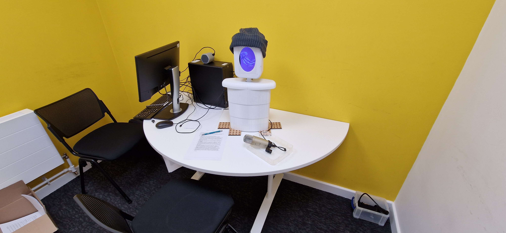
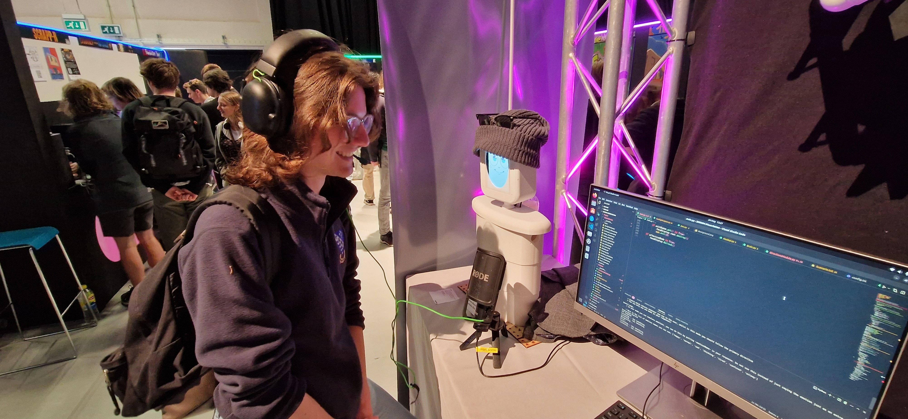
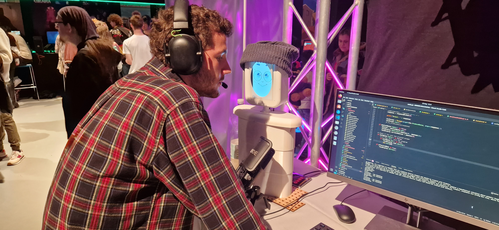
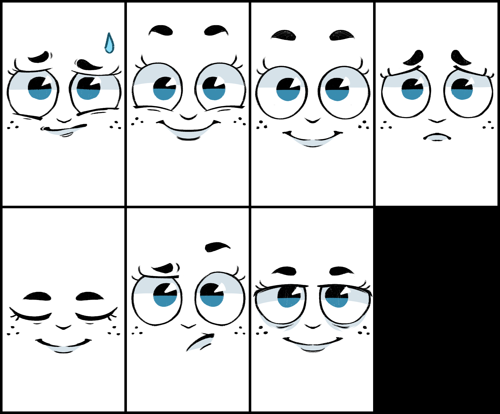
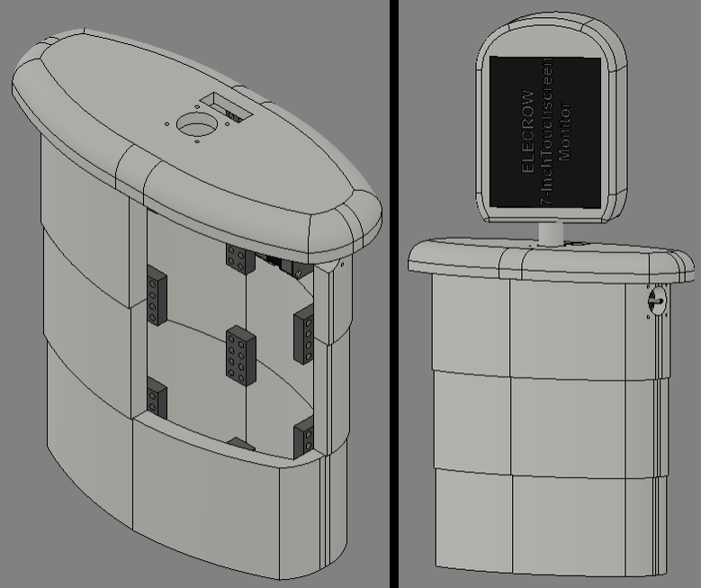

PEA: Personal Electronic Assistant
A humanoid robot designed for simple service applications
A humanoid robot designed for simple service applications
PEA (Personal Electronic Assistant) is a humanoid service robot I designed and built as my final-year university dissertation project. Created entirely by me—from hardware design and fabrication to AI integration—PEA explores how simulated emotion can influence user trust in service robots.
The robot uses facial expressions, voice modulation, and personality-driven responses to enhance its social presence. I tested PEA in a live, controlled study with over 50 participants to compare trust levels between affective and non-affective modes. Results showed a statistically significant increase in trust for the emotionally expressive version, demonstrating real potential for affective robotics in public-facing service roles.





This project was completed as part of my final year university dissertation. The full dissertation document is available below for those interested in the technical details and development process of PEA.